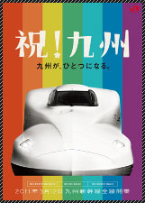

관광정보 입소문

- ◆[유후인]유후인은 유후인노모리를 타고!!
- 2011/11/22 18:47
- URL：http://blog.naver.com/jrkyushurail/10124906908
-
- ◆JR북부큐슈레일패스 구매에서 교환 방법까지!
- 2011/11/14 14:20
- URL：http://blog.naver.com/jrkyushurail/10123801593
-
- ◆[유후인]유후인 여행의 시작, 유후인역
- 2011/10/21 18:04
- URL：http://blog.naver.com/jrkyushurail/10121982338
-
- ◆[큐슈여행]쿠마모토의 밤-시모토리, 카미토리 아케이드 거리 산책
- 2011/10/04 17:48
- URL：http://blog.naver.com/jrkyushurail/10120430931
-
- ◆[큐슈여행]아소산 쿠사센리부터 나카다케까지 트레킹하고, 로프트타고 내려오기
- 2011/09/30 11:04
- URL：http://blog.naver.com/jrkyushurail/10120052256
-
- ◆[큐슈여행]유후인노모리타고 후쿠오카로. 비오는 날의 하카타 풍경
- 2011/09/19 19:33
- URL：http://blog.naver.com/jrkyushurail/10119092592
-
- ◆[큐슈여행]하우스텐보스에서 나가사키로 :: 노면전차타고 떠나는 나가사키 여행
- 2011/08/23 10:48
- URL：http://blog.naver.com/jrkyushurail/10116771814
-
- ◆[큐슈여행]후쿠오카공항, 하카타역에서 하우스텐보스로 가는 큐슈여행의 출발선
- 2011/08/16 14:07
- URL：http://blog.naver.com/jrkyushurail/10116124182
-
- ◆JR큐슈레일 열차여행의 프롤로그(PEN)
- 2011/08/08 18:45
- URL：http://blog.naver.com/jrkyushurail/10115430027
-
- ◆하나비의 일본철도 여행기 1기 - 못다한 꿈 [Chapter 3. 동서남북 큐슈 휘젓기 1편 - 큐슈의 끝, 모지코로]
- 2011/08/05 16:15
- URL：http://blog.naver.com/jrkyushurail/10115192175
-
- ◆JR큐슈레일패스 교환권을 실제 패스로 교환하자!
- 2011/07/29 18:44
- URL：http://blog.naver.com/jrkyushurail/10114654688
-
- ◆기타큐슈 모지코 산책 - 가슴이 탁트이는 바다가 있는 곳
- 2011/06/27 16:06
- URL：http://blog.naver.com/jrkyushurail/10112158286
-
- ◆모래찜질 온천 이브스키로 가는 열차 - 나노하나/이브스키노타마테바코
- 2011/05/20 16:57
- URL：http://blog.naver.com/jrkyushurail/10109492894
- ◆JR큐슈 레일패스의 모든것 - 100배 활용하기
- 2011/05/18 16:47
- URL：http://blog.naver.com/jrkyushurail/10109344556
- ◆큐슈신칸센 사쿠라 – 새롭게 등장한 일본의 초고속열차
- 2011/05/02 17:10
- URL：http://blog.naver.com/jrkyushurail/10108219838
- ◆하카타 옥상공원 츠바메노모리에서 후쿠오카 시내를 감상해 보자!
- 2011/04/15 18:00
- URL：http://blog.naver.com/jrkyushurail/10107106061
- ◆JR하카타역의 모든 것 – 하카타역 안내
- 2011/04/04 12:31
- URL：http://blog.naver.com/jrkyushurail/10106353911
- ◆증기기관차SL히토요시:아직도 운행되고 있는 90년 전 열차
- 2011/03/04 16:07
- URL：http://blog.naver.com/jrkyushurail/10104414103